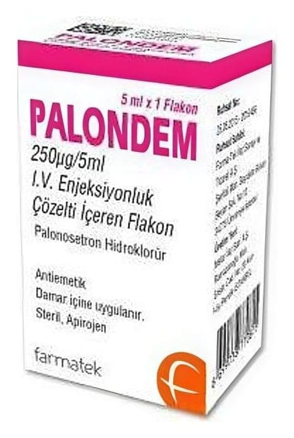

Palondem 250 mcg/5 ml IV Enjeksiyonluk Çözelti İçeren Flakon ,1 Adet

Ne için kullanılır
KT · Bölüm 1• PALONDEM, damar içine uygulanan berrak, renksiz ve partikülsüz çözeltidir • PALONDEM, 5 ml çözelti içeren cam bir flakon içinde ambalajlanmıştır. • PALONDEM, serotonin (5HT
) antagonistleri olarak bilinen bir ilaç grubuna aittir. • Bu grup ilaçlar bulantı ve kusmaya neden olabilen serotoninin etkisini durdurarak etki gösterir. • PALONDEM, yetişkinlerde, adolesanlarda ve bir aylıktan büyük çocuklarda kanserin ilaçla tedavisi (kemoterapisi) ile bağlantılı bulantı ve kusmanın önlenmesinde kullanılır.